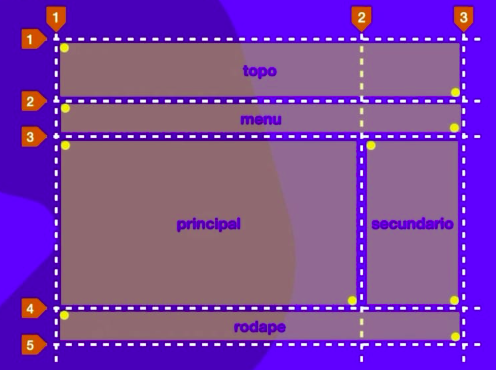

Grid Layout
Container 1 - Definindo Colunas e Linhas.
Container 2 - Alinhando os Items.
Container 3 - Alinhando os Conteúdos.
Container 4 - Definindo o tamanho das próximas Linhas e Colunas.
Container 5 - Funções e Frações.
Container 6 - Propriedade de Items.
Container 7 - Desafio.
